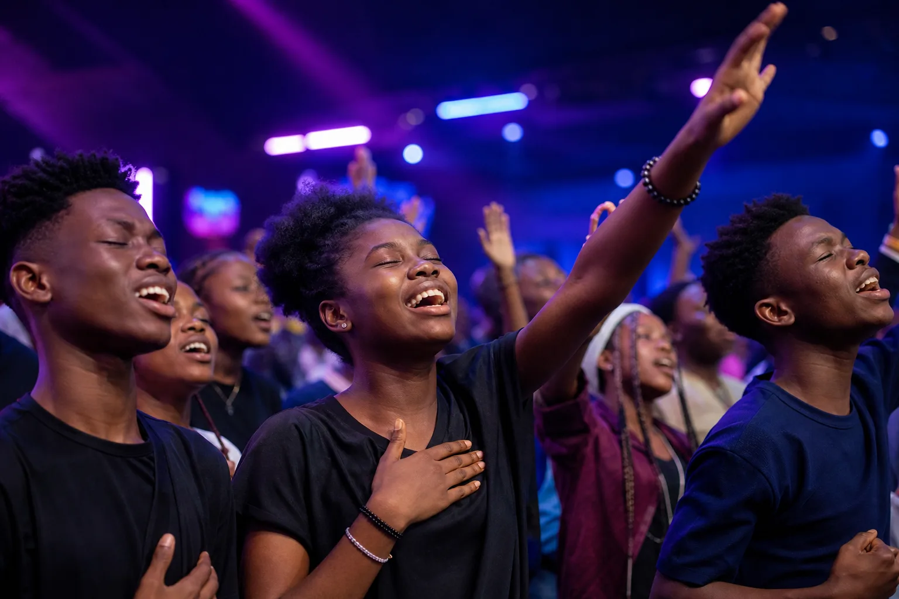
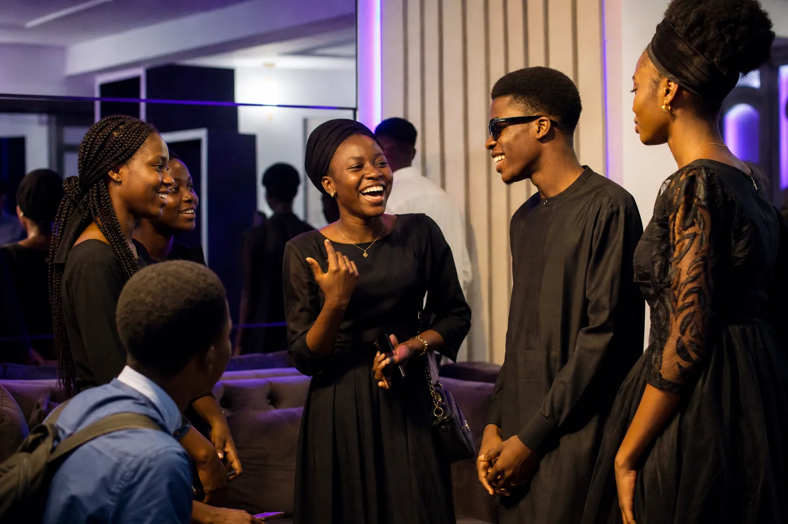

WorshipSunday Worship Atmosphere
Passionate praise and worship led by the CE Central 3 Teens Worship Team.
Pictures, worship sessions, teaching highlights, and creative ministry recaps.

WorshipPassionate praise and worship led by the CE Central 3 Teens Worship Team.

CommunityConnecting, laughing, and building lifelong godly friendships after service.
Interactive Bible study and Q&A sessions on identity, purpose, and faith.
 Creative & Media
Creative & Media
Our teens media, sound, and creative crew preparing for Sunday service.